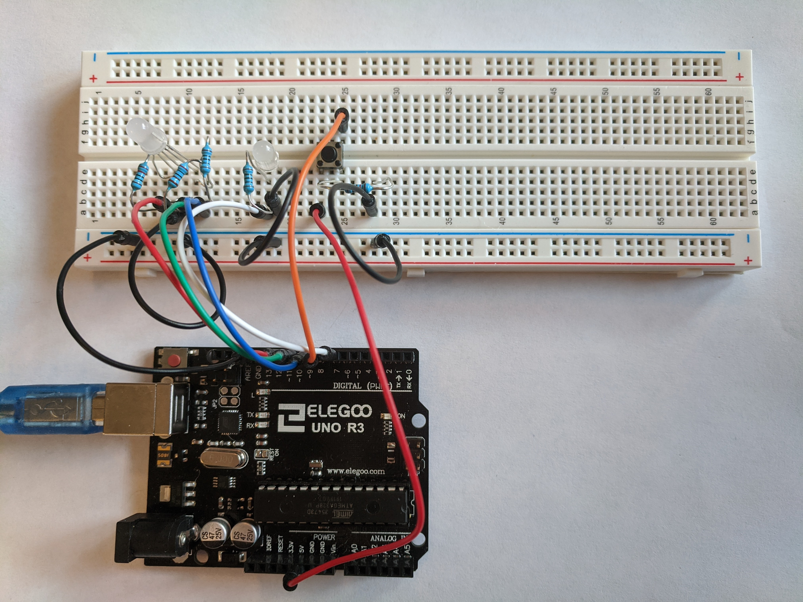
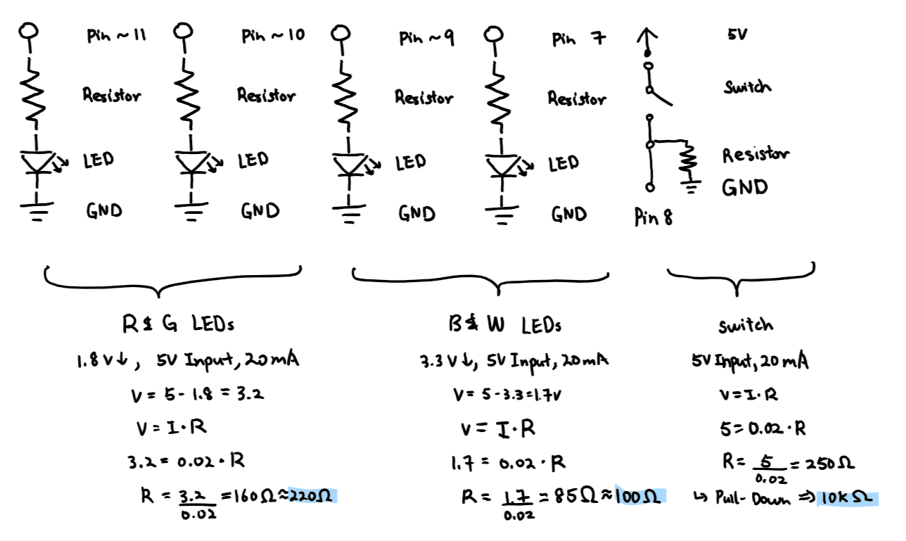

Amanda's Assignment 2!
Here is all the documentation for assignment 2!

This is the Arduino circuit consisting of one multi-coloured
LED, one white LED, and one button.

This is the circuit in action. The white LED flashes once
symbolizing the start of the sequence. Then, the red
becomes brighter and fades out. The white LED flashes twice,
symbolizing the change to green. The green becomes brighter
and fades out. The white LED now flashes three times, sig-
naling the change to blue. The blue becomes brighter and
fades out. The white LED flashes once, symbolizing the end.

These are the schematic and resistance calculations. 100 and
220 ohms resistors were chosen since they were the closest to
the respective resistances (85 and 160 ohms). For the switch,
any resistor above 250 ohms could have been used and a 10K
ohms resistor was chosen to act as a pull-down resistor.
// HCDE 439, A2: Fade!
// Nadya Peek, WIN2020
// constant for Red part connected to pin 11
const int R = 11;
// constant for Green part connected to pin 10
const int G = 10;
// constant for Blue part connected to pin 9
const int B = 9;
// constant for button connected to pin 8
const int buttonPin = 8;
// constant for White LED connected to pin 7
const int W = 7;
// variable for button state; initalized at 0
int buttonState = 0;
// function called when file starts
void setup() {
// initalizes R pin as output
pinMode(R, OUTPUT);
// initalizes G pin as output
pinMode(G, OUTPUT);
// initalizes B pin as output
pinMode(B, OUTPUT);
// initalizes button pin as input
pinMode(buttonPin, INPUT);
// initalizes W pin as output
pinMode(W, OUTPUT);
}
// function executed after setup; repeatedly
void loop() {
// reads the state of the button pin
buttonState = digitalRead(buttonPin);
// executes if button state is high (pressed)
if(buttonState == HIGH) {
// turns White LED on
digitalWrite(W, HIGH);
// delays for 500 miliseconds
delay(500);
// turns White LED off
digitalWrite(W, LOW);
// delays for 500 miliseconds
delay(500);
// increases brightness of Red part (0 to 255)
for(int i = 0; i < 256; i++) {
// increases value of Red part by 1
analogWrite(R, i);
// delays for 15 miliseconds
delay(15);
}
// decreases brightness of Red part (255 to 0)
for(int i = 255; i >= 0; i--) {
// decreases value of Red part by 1
analogWrite(R, i);
// delays for 10 miliseconds
delay(10);
}
// delays for 200 miliseconds
delay(200);
// turns White LED on
digitalWrite(W, HIGH);
// delays for 200 miliseconds
delay(200);
// turns White LED off
digitalWrite(W, LOW);
// delays for 200 miliseconds
delay(200);
// turns White LED on
digitalWrite(W, HIGH);
// delays for 200 miliseconds
delay(200);
// turns white LED off
digitalWrite(W, LOW);
// increases brightness of the Green part (0 to 255)
for(int i = 0; i < 256; i++) {
// increases value of Green part by 1
analogWrite(G, i);
// delays for 15 miliseconds
delay(15);
}
// decreases brightness of the Green part (0 to 255)
for(int i = 255; i >= 0; i--) {
// decreases value of Green part by 1
analogWrite(G, i);
// delays for 10 miliseconds
delay(10);
}
// delays for 200 miliseconds
delay(200);
// turns White LED on
digitalWrite(W, HIGH);
// delays for 200 miliseconds
delay(200);
// turns White LED off
digitalWrite(W, LOW);
// delays for 200 miliseconds
delay(200);
// turns White LED on
digitalWrite(W, HIGH);
// delays for 200 miliseconds
delay(200);
// turns white LED off
digitalWrite(W, LOW);
// delays for 200 miliseconds
delay(200);
// turns White LED on
digitalWrite(W, HIGH);
// delays for 200 miliseconds
delay(200);
// turns white LED off
digitalWrite(W, LOW);
// increases brightness of the Blue part (0 to 255)
for(int i = 0; i < 256; i++) {
// increases value of Blue part by 1
analogWrite(B, i);
// delays for 15 miliseconds
delay(15);
}
// decreases brightness of the Blue part (0 to 255)
for(int i = 255; i > 0; i--) {
// decreases value of Blue part by 1
analogWrite(B, i);
// delays for 10 miliseconds
delay(10);
}
// delays for 800 miliseconds
delay(800);
// turns White LED on
digitalWrite(W, HIGH);
// delays for 500 miliseconds
delay(500);
// turns White LED off
digitalWrite(W, LOW);
// delays for 500 miliseconds
delay(500);
// executes if button state is low (not pressed)
} else {
// turns Red part off
digitalWrite(R, LOW);
// turns Green part off
digitalWrite(G, LOW);
// turns Blue part off
digitalWrite(B, LOW);
// turns White LED off
digitalWrite(W, LOW);
}
}
This is the code snippet